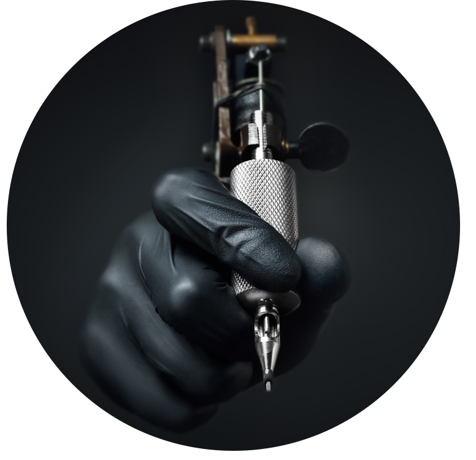

Artists

Matheus

Reafon
Victor
Ganz am Anfang steht ein Tattoo, habt ihr euch schon gedacht, oder? Max war auf der Suche nach einem Tätowierer beziehungsweise einem Tattoo Studio, er wollte etwas Außergewöhnliches, etwas das er bei den heimischen Studios nicht fand. So begann er zu zeichnen, Skizzen zu machen und je länger er sich damit beschäftigte, desto klarer war ihm, dass er um seinen Wunsch umgesetzt zu bekommen reisen würde müssen. In dieser Zeit lagen viele Zeichnungen in seinem Wohnzimmer, im Vorzimmer, im Schlafzimmer, okay – überall wo Platz war. Freunde, die zu Besuch kamen, säten den Samen und fragten, ob er schon überlegt hätte selbst zu tätowieren. Zuerst war es nur eine Idee, etwas, das er mit einem Schmunzeln abtat und dann, dann kündigte sich sein erster Sohn an und der Kunst und Deutsch Lehrer bestellte sich aus einer Laune heraus eine Tätowiermaschine, Farben und holte vom Fleischer Schweinehaut zum Üben.
Matheus
Reafon
Victor